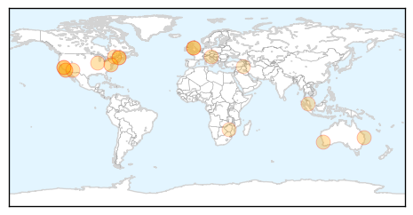

Measles
30-Day Web Trend
0 alerts, 0 warnings

30-Day Twitter Trend
2 alerts, 0 warnings

Article Locations
Article Confidences

Top Articles:
- 0.984
- 10 Top Facts About Vaccine Risks
- 0.963
- 10 Top Myths About Vaccines and Autism
- 0.963
- Brisbane: measles alert issued
- 0.961
- Navajo Head Start officials urge students and staff to get measles vaccination
- 0.958
- Measles outbreak in Lanaudière is spreading, 80 now infected
- 0.955
- Broncos fans faced measles risk as Brisbane on alert
- 0.954
- As U.S. measles outbreak spreads, Portland clinic hosts vaccination event — Health — Bangor Daily News — BDN Maine
- 0.953
- More measles cases tied to Disneyland, Illinois day care
- 0.950
- Health officials urge measles vaccinations
- 0.917
- Busting measles myths – is it time to vaccinate inmates?
- 0.846
- Prvi interaktivni multimedijski portal, MMC RTV Slovenija
- 0.841
- Dana Hills High School
- 0.834
- More parents delaying vaccines, survey finds
- 0.809
- California Health Department denounces natural immunity, warns against 'measles parties'
- 0.795
- Christchurch measles child can return to school
- 0.763
- FOX 8 WVUE New Orleans News, Weather, Sports, Social
- 0.717
- New measles vaccine on cards
- 0.664
- Iraq: Iraq: 3RP Monthly Update - January 2015: Health
- 0.521
- Anti-vaccine mothers discuss their thinking amid backlash
Top Tweets:
-
No tweets found for Mar 10, 2015
Dengue Fever
30-Day Web Trend
0 alerts, 0 warnings

30-Day Twitter Trend
0 alerts, 0 warnings

Article Locations

Article Confidences

Top Articles:
- 0.997
- Amid H1N1 scare, 3 dengue cases
- 0.952
- Fogging at City Hall as Basuki Comes Down With Dengue
- 0.944
- Dengue exposures unnoticed among Ghanaian children
- 0.940
- Governor Ahok comes down with dengue
- 0.934
- Governor Ahok Comes Down With Dengue
- 0.867
- Rainy weather spreads illness, sends more infants to hospitals
- 0.860
- PH spends less than P1B to fight neglected tropical diseases
- 0.803
- Big buzz about sterile males in the Florida Keys
- 0.614
- Rainy weather spreads illness, sends more infants to hospitals
Top Tweets:
- 0.524
- Flavivirus news: Dengue cases continue to drop— CHO - Zamboanga Today Online: Dengue cases cont... http://t.co/tUticr5UZa pathogenposse